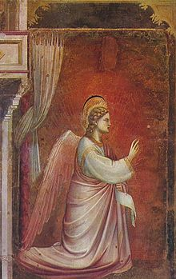
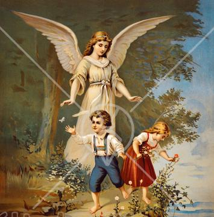
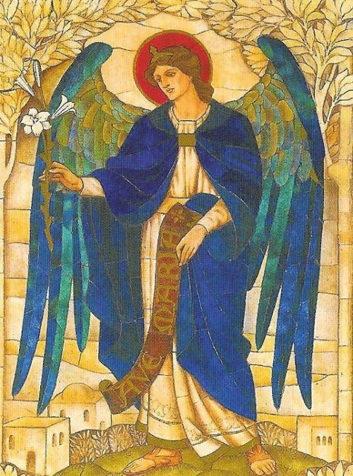

CULTO E PATRONATO
O culto aos Anjos é um tesouro tradicional da Igreja. Os Anjos são reverenciados e é implorada a sua preciosa e eficaz intercessão. O fundamento da veneração aos Anjos está no âmbito sobrenatural. A razão para admirar, celebrar e invocar os Anjos é a sua proximidade com DEUS, a perfeição que esses espíritos têm alcançado pela Graça Divina, assim como o amor Deles a DEUS e a nós, toda humanidade. Como eles, também nós somos chamados há partilhar um dia o reino do CRIADOR.
Gabriel é sempre apresentado como um Anjo portador de boas notícias. São Gregório Magno, em suas homilias sobre os Evangelhos, dizia: "Para a VIRGEM MARIA não foi enviado um Anjo qualquer, mas o Arcanjo São Gabriel! Convinha, na verdade, que para esta missão fosse enviado um Anjo entre os maiores, com capacidade para promover o maior dos anúncios. Por isso, foi enviado o Arcanjo Gabriel a MARIA, ele que é chamado “força de Deus”. E foi para anunciar que se dignou a aparecer na sua humildade, a fim de erradicar o poder do maligno. Sendo por essa razão, também denominado "fortaleza de Deus" que veio como o "Senhor dos Exércitos e forte guerreiro."
São Gabriel também é invocado como o “padroeiro dos sacerdotes”, porque normalmente ele e é representado usando uma alva e estola. Zacarias também é descrito e representado com as vestes e características sacerdotais, e lhe são dados como atributos: o incensório e um rolo ou uma taboa com o nome João.

ATENÇÃO: MUITO IMPORTANTE
"Um conselho realizado em Roma no ano 745, sob o Papa Zacarias, proibiu a invocação do nome de Uriel, Baraquiel, Raguel, Tofoas, Salatiel, Jeremiel, e outros, afirmando que esses “supostos anjos” são na realidade “demônios”. Assim sendo, somente devem ser legitimamente invocados os nomes de Anjos que se encontram nas Sagradas Escrituras Cristãs, ou seja: Miguel, Gabriel e Rafael. No Conselho Franchi, no tempo de Carlos Magno, da mesma forma que no Conselho de Aachen, na Alemanha, no ano 789, não só foi confirmada a proibição, como também estabelecida penalidades a aqueles que utilizassem de nomes não-bíblicos para se referir a “supostos Arcanjos”. As penalidades para punir os infratores são fortes e irreversíveis, incluindo até a excomunhão, principalmente para aqueles que adoram o "grande Arcanjo Uriel", que afirmam, ser o maior de todos,superior aos demais Arcanjos. O critério decisivo é a lealdade a Revelação Divina contida nos textos Sagrados. Isto porque, se fosse do desejo Divino, o nome dos outros Arcanjos seria revelado a Igreja”.

No dia 1º de Abril de 1951, o Papa Pio XII, com um “breve apostólico”, proclamou o Arcanjo Gabriel patrono das telecomunicações, do telégrafo, do telefone, do rádio, da televisão e até mesmo dos filatelistas (colecionadores de selos postais). Também é o patrono da Radio Vaticano.
Em 1972, o Papa Paulo VI ampliou ainda mais o patrocínio do Arcanjo, estendo-o ainda mais na Carta Apostólica de 9 de Dezembro no ano de 1972. O Papa Montini escreveu assim: "Nas páginas da Sagrada Escritura, alguns documentos falam da Bondade Divina, da ajuda obtida do SENHOR por meio de criaturas celestes, incluindo os Anjos, especialmente São Gabriel Arcanjo, mensageiro das coisas mais elevadas. Ele, pelo fato de que do Céu estrelado trouxe à Terra a mensagem mais importante da história a Anunciação do SENHOR, no ano de 1951 foi eleito patrono das "telecomunicações" entre os povos. Agora, com os itens de natureza semelhante às telecomunicações, com a nossa autoridade apostólica declaro São Gabriel Arcanjo, o Santo padroeiro também dos Correios”.
É através da recitação da “Oração Ave Maria” que os católicos repetem todos os dias as mesmas palavras do Anúncio Celeste à VIRGEM MARIA. Cada vez que recitamos a "Ave Maria", oferecemos novamente a nossa MÃE CELESTE todas as graças e a felicidade interior que São Gabriel ofereceu a ELA no momento da Anunciação: "Ave, cheia de graça, o SENHOR é convosco. Tu és bendita entre todas as mulheres".Outra oração bonita que lembra o Mistério da Encarnação do Verbo é a oração do "Angelus" (O Anjo do SENHOR Anunciou a MARIA); tais orações nos lembram o Arcanjo São Gabriel, e devem ser recitadas tantas vezes quanto possível por dia (pela manhã, à tarde e a noite). Um Santo disse que quem recita o “Angelus” devotamente já está no meio da estrada que leva ao Céu.
ORAÇÕES A SÃO GABRIEL
1ª ORAÇÃO – UM PEDIDO
Ó glorioso Arcanjo São Gabriel, eu compartilho com Ti a alegria que sentiste em dar tal preciosa Mensagem Celeste a MARIA, e admiro o respeito com que Tu apresentaste a Lei, a devoção com que a saudou, o amor com que se tornou o primeiro entre os Anjos, a adorar o VERBO ENCARNADO no ventre da SANTÍSSIMA VIRGEM, e “peço-te, por favor, de me conceder repetir com os mesmos sentimentos que Tu demonstraste, na saudação que agora dirijo a MARIA, com o mesmo amor e idêntico respeito que então apresentaste ao VERBO feito HOMEM, com a recitação do Santo Rosário e do Anjo do SENHOR, que com prazer vou rezar. Amém.
2ª ORAÇÃO - PROTETOR DE TÉCNICAS ÁUDIO-VISUAL:
PAI Celeste, eu VOS agradeço por ter escolhido dentre todos os Anjos, o Arcanjo São Gabriel para ser o anunciante da "Encarnação e Redenção da Humanidade”. MARIA acolheu com fé o anúncio, e o seu FILHO JESUS se Encarnou, e morrendo sobre Cruz, redimiu toda a humanidade.
A maioria das pessoas, no entanto, ainda não recebeu a mensagem de salvação e vivem na escuridão. São Gabriel, Patrono da televisão, das técnicas audiovisuais, do cinema, do rádio e da televisão, implore ao querido SENHOR JESUS, no sentido de que com estes poderosos meios de comunicação possa a Igreja, o mais rapidamente possível, pregar a verdade de DEUS para o povo acreditar, lhes indicando o verdadeiro caminho a seguir. Que esses dons de DEUS sirvam para a elevação e salvação de todos. Que nunca estas técnicas sejam empregadas para o erro e a ruína das almas! Que todo homem humildemente aceite a mensagem de JESUS CRISTO. São Gabriel rogue por nós, e para o êxito do apostolado com as técnicas audiovisuais. Amém.
3ª - ORAÇÕES EM HONRA DE SÃO GABRIEL ARCANJO:
Ó Deus, por misericórdia, vinde em meu auxílio.
Gloria ao PAI, ao FILHO e ao ESPÍRITO SANTO. Amém!

3.1 - Glorioso Arcanjo São Gabriel, um dos Sete Anjos que estão diante do Trono de DEUS, pela predileção demonstrada pelo SENHOR que o escolheu entre todos os Anjos, para se manifestar no tempo, as circunstâncias da Encarnação do VERBO e da Redenção da humanidade; e que depois comunicou ao Profeta Daniel a chegada do Messias; eu Ti suplico, por favor, ajude-me a viver sempre na presença de DEUS, onde os meus pensamentos, as minhas palavras, e todas as minhas ações sejam dirigidas a Maior Gloria do SENHOR, e para que eu também possa merecer o prêmio eterno, alcançando o Céu junto de DEUS.
Pai Nosso, Ave Maria e Gloria.
3.2 - Anjo Amado de DEUS, meu São Gabriel, por aquela missão confiada por DEUS de anunciar a São Zacarias o nascimento de São João Batista, destinado a ser o precursor do Messias, e que causou tanta alegria, obtenha de DEUS para mim, a graça de imitar as virtudes deste Santo, de modo a ser igual a ele na Terra, fazendo-me participante da glória que ele agora desfruta no Céu.
Pai Nosso, Ave Maria e Gloria.
3.3 - Espírito nobre da Corte Celestial, meu Arcanjo São Gabriel, pela grande alegria que Tu sentiste por ter sido escolhido por DEUS para anunciar a MARIA SANTÍSSIMA, o Mistério da Encarnação do VERBO, alcançai-me a graça de realizar constantemente os meus deveres de cristão a fim de poder merecer, em virtude da Encarnação de CRISTO, a salvação eterna.
Pai Nosso, Ave Maria e Gloria.
3.4 – Fiel e digno embaixador do Rei da Glória, meu querido Arcanjo São Gabriel, em troca daquela alegria indizível que sentistes no momento da comunicação a MARIA SANTÍSSIMA de se tornar a MÃE DE JESUS, alcançai-me a graça de uma devoção sincera, filial e constante a NOSSA SENHORA.
Pai Nosso, Ave Maria e Gloria.
3.5 - Amadíssimo Mensageiro do ALTÍSSIMO que levou notícias a VIRGEM MARIA, que é cheia de graça, bendita entre todas as filhas de Eva, e lhe disse que estava com a Lei do SENHOR, por favor, à imitação da VIRGEM, me obtenha o espírito de verdadeira e constante humildade, que me faça merecer as graças de DEUS nesta vida, e a glória eterna na outra.
Pai Nosso, Ave Maria e Gloria.
3.6 - Confidente do SENHOR DO UNIVERSO, meu Arcanjo São Gabriel, por aquela profunda veneração a concepção de MARIA, quando acolheu o consentimento DELA ao anúncio Divino, lhe assegurando que ELA se tornaria a MÃE DE DEUS, e permaneceria VIRGEM, alcançai-me tal pureza de espírito e de corpo, que eu despreze todos os prazeres e valores do mundo, jamais violando nenhuma das virtudes cristãs.
Pai Nosso, Ave Maria e Gloria.
3.7 - Ó Secretário dos Conselhos Divinos, meu Arcanjo São Gabriel, pela coragem que inspiraste a MARIA, dissipando as dúvidas da sua mente, para que, em seguida, ELA concordasse em ser a MÃE DE DEUS, seja sempre, meu querido Santo Anjo, o meu conselheiro e meu apoio, reprimindo todas as obras do espírito maligno, mostrando-me sempre o verdadeiro caminho do bem, alcançando-me a graça de andar e caminhar por essa mesma estrada, levando a boa nova e o amor de DEUS para os outros.
Pai Nosso, Ave Maria e Glória.
INVOCAÇÃO A SÃO GABRIEL
(Para dar a luz ou para aquelas mulheres que desejam a maternidade)

Grande Arcanjo São Gabriel, eu me volto para Ti com uma esperança infinita. Nos dias de Herodes, rei da Judéia, havia um sacerdote chamado Zacarias, cuja esposa chamava-se Isabel, e não tinha filhos porque era estéril, e ambos já eram de idade avançada. Você apareceu a Zacarias e lhe disse: "A tua oração foi ouvida: a tua esposa dará à luz um filho, que será para ti causa de prazer e alegria, porque será grande diante do SENHOR." Tu, pela Vontade de DEUS, também anunciaste a MARIA que o ESPÍRITO SANTO ia descer sobre ELA, e ELA ia engravidar! Meu querido São Gabriel, o senhor que é o Anjo da Anunciação, eu confesso que sinceramente não tenho observado impecavelmente, como fazia Isabel, os Mandamentos e os preceitos do SENHOR, mas, eu prometo me corrigir e me esforçar, objetivando mostrar a DEUS a face do meu amor puro e sincero, que quero dedicar ao SENHOR com todas as forças do meu coração. Por isso, querido Arcanjo, venho humildemente lhe suplicar, a Ti que está tão perto de DEUS, a sua eficaz e tão desejada intercessão, para alcançar de NOSSO SENHOR uma graça especial que tanto almejo na minha vida, que o SENHOR me conceda a feliz graça da maternidade, permitindo que eu e meu marido possamos ter filhos. Amém.
AMOROSO ARCANJO
É necessário saber e ter consciência desta verdade, sobre o ARCANJO SÃO GABRIEL: “Ele semeia o bem em nossas vidas, guia a nossa criatividade para construção de vínculos de paz, e faz nascer em cada um de nós uma sólida vontade, brilhante como uma estrela, para construir a civilização do amor”. DEUS seja louvado por nos enviar o Arcanjo São Gabriel.
ORAÇÃO EM FAVOR DA VIDA NASCENTE
São Gabriel Arcanjo, nos ensina a aceitar com alegria a vontade de DEUS, como homem e mulher servos e obedientes ao SENHOR, como MARIA DE NAZARÉ. Tu foste à primeira testemunha da Encarnação do VERBO no seio da VIRGEM MARIA. Ensina-nos a respeitar o germe da vida no útero, para que não cometamos qualquer crime contra o incrível milagre da encarnação; proteja as nossas esposas e mães, do grande e grave pecado do nosso tempo, o pecado do aborto, uma nova matança de inocentes como aconteceu naquela época em Belém, por ordem do rei Herodes. Abra os olhos de nossas meninas e mulheres, para que vejam a grande dignidade da sua condição de poder gerar e conduzir nas suas entranhas uma criança, que receberá a “alma da vida, enviada por DEUS”. Pois foi também no âmago puríssimo e sagrado da SANTÍSSIMA VIRGEM MARIA, que para exemplo e modelo de todos os casais e de todas as famílias, se formou pela Vontade Divina, o SENHOR JESUS, FILHO DO DEUS ETERNO E TODO PODEROSO. Assim com o mesmo espírito de MARIA e de agradecimento e reconhecimento ao SENHOR DEUS, pelo dom da criação, que seja enraizado na mente das esposas, dos maridos e dos filhos, uma profunda mentalidade de respeito à vida, porque a “vida é dom de DEUS”. Amém.